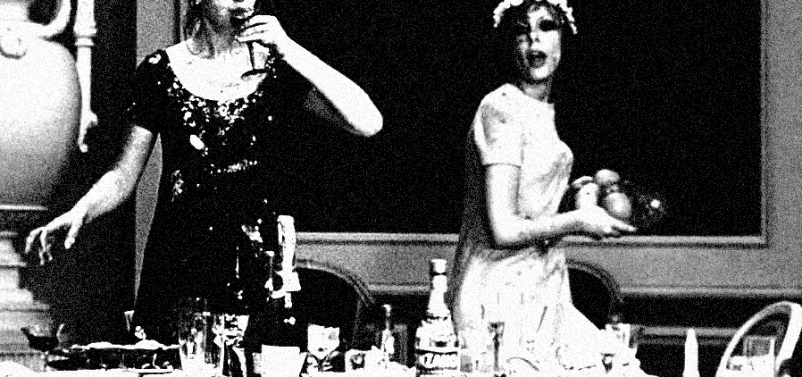

Specimen No. Ⅶ | Written by Maya Lee
In < Daisies >, two girls named Marie claim that the world is utterly corrupt and deliberately disrupt and destroy the lives around them. Throughout the film, they engage in bizarre behaviour and exaggerated frivolity, breaking the molds of femininity expected by men and striving to assert dominance over them.

Two girls, MarieI and MarieII spectacularly ruin the party.
This film continuously employs montage and metaphor,
with
the
butterfly
being
interpreted
in
two
primary
ways;
traditional
values
and
the
destroyer.
In the story, there is an old man who collects butterfly specimens; the butterflies in his collection are mostly depicted as taxidermized specimens pinned to mounting boards, or reduced to decorative motifs. This symbolises the notions of femininity and traditional values as defined by the older generation, implying that women are beautiful beings who must remain demurely confined within a framework.
However, their values reject this entirely; instead, they choose to dress flamboyantly like butterflies and become destroyers
themselves. In the sense that they objectify their own bodies, this also echoes the paradox found in Agnès Varda’s
Women Reply: Our Bodies, Our Sex.[1]
They do not act for the sake of some grand revolutionThey simply move from one target of de-struction to the next, just as a butterfly
flits from flower to flower—simply for the fun of it, or out of boredom. Ultimately, their trivial and playful acts of destruction ultimately become a massive
fissure that shakes the entire patriarchal and
social order to its core. ⁋